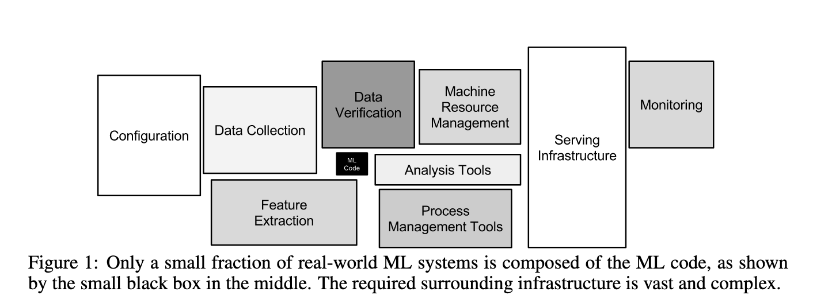

<!DOCTYPE html>
<html lang="en">
  <head>
    <meta charset="utf-8" />
    <meta name="viewport" content="width=device-width, initial-scale=1.0, maximum-scale=1.0, user-scalable=no" />

    <title>Migrating to Kubernetes</title>
    <link rel="stylesheet" href="./dist/reveal.css" />
    <link rel="stylesheet" href="./assets/base.css" id="theme" />
    <link rel="stylesheet" href="./css/highlight/zenburn.css" />
    <link rel="stylesheet" href="./assets/footer.css" />

  </head>
  <body>
    <div class="reveal">
      <div class="slides"><section  data-markdown><script type="text/template">

### Migrating a machine learning pipeline to Kubernetes

Zach Lipp

he/him

Senior Software Engineer, Lumere

19 February 2020
</script></section><section  data-markdown><script type="text/template">
### Problem overview

We want to help our team of expert medical researchers classify hospital purchases

<div style="float:left; width:45%;">
<table style="font-size:25px;">
<thead>
<tr>
<th>Field</th>
<th>Data Type</th>
<th>Example</th>
</tr>
</thead>
<tbody><tr>
<td>Cost</td>
<td>Float</td>
<td><code>0.01</code></td>
</tr>
<tr>
<td>Description</td>
<td>String</td>
<td><code>SUT SILK 3-0 SA74H</code></td>
</tr>
<tr>
<td>Contract</td>
<td>String</td>
<td><code>SUTURE PRODUCTS</code></td>
</tr>
<tr>
<td>Department</td>
<td>String</td>
<td><code>SURGERY</code></td>
</tr>
</tbody>
</table>
</div>
<!-- .element: class="fragment" data-fragment-index="1" -->

<div style="float:right; width:45%; margin-top:15%;">
<strong>Category</strong>: Sutures
</div>
<!-- .element: class="fragment" data-fragment-index="2" -->
</script></section><section  data-markdown><script type="text/template">
### Problem overview

You don't need to be an expert for some of these

<div style="float:left; width:45%;">
<table style="font-size:25px;">
<thead>
<tr>
<th>Field</th>
<th>Data Type</th>
<th>Example</th>
</tr>
</thead>
<tbody>
<tr>
<td>Contract</td>
<td>String</td>
<td><code><strong>SUTURE PRODUCTS<strong></code></td>
</tr>
</tbody>
</table>
</div>

<div style="float:right; width:45%; margin-top:15%;">
<strong>Category</strong>: Sutures
</div>
</script></section><section  data-markdown><script type="text/template">
### Enter machine learning!

We can use the text descriptions as inputs to classification models. This is called *short text classification*.

<iframe width=300px height=350px src="https://lmgtfy.com/?q=short+text+classification&pp=1&s=d">
</iframe>
<!-- .element: class="fragment" data-fragment-index="1" -->
</script></section><section  data-markdown><script type="text/template">
### Machine learning deployment
<table style="font-size: 22px;">
<thead>
<tr>
<th style="font-size: 25px;">Modeling</th>
<th style="font-size: 25px;">Delivery</th>
<th style="font-size: 25px;">Pros</th>
<th style="font-size: 25px;">Cons</th>
</tr>
</thead>

<tbody><tr>
<td>Jupyter</td>
<td>Excel</td>
<td><ul><li>It works!</li></ul></td>
<td><ul><li>Time intensive (for all parties)</li><li>Manual</li></ul></td>
</tr>
<!-- .element: class="fragment" data-fragment-index="1" -->
<tr>
<td>ECS</td>
<td>Django</td>
<td><ul><li>Delivery much simpler</li><li>Does not require data scientist to run models</li></ul></td>
<td><ul><li>Expensive</li><li>Error-prone</li><li>Scaling problems</li></ul></td>
</tr>
<!-- .element: class="fragment" data-fragment-index="2" -->
<tr>
<td>Kubernetes</td>
<td>Django</td>
<td><ul><li>Delivery the same</li><li>Fault-tolerant</li><li>Built for scale</li></ul></td>
<td><ul><li>Distributing software is hard</li><li>TBD</li></td>
</tr>
<!-- .element: class="fragment" data-fragment-index="3" -->
</tbody>
</table>
</script></section><section  data-markdown><script type="text/template">
### Results
- Our reconfigured pipeline is faster end-to-end
- We no longer require manual modeling runs
- Improved monitoring and observability
- Models are written to disk
- We parallelized model training, predicting, and preprocessing
- We distribute and schedule work with Dask
</script></section><section  data-markdown><script type="text/template">
### Configuration
- Two `Deployments` (Dask workers, scheduler)
- Three `CronJobs` (training, predicting, refreshing training data)
</script></section><section  data-markdown><script type="text/template">
### Lessons learned
#### 1. Know your APIs

- scikit-learn has great functionality for building pipelines
<!-- .element: class="fragment" data-fragment-index="1" -->
  - `Pipeline`
<!-- .element: class="fragment" data-fragment-index="1" -->
  - `FunctionTransformer`
<!-- .element: class="fragment" data-fragment-index="1" -->
  - `ColumnTransformer`
<!-- .element: class="fragment" data-fragment-index="1" -->
- pandas can save your database some munging
<!-- .element: class="fragment" data-fragment-index="2" -->
  - `DataFrame.groupby`
<!-- .element: class="fragment" data-fragment-index="2" -->
  - `.to_sql()`
<!-- .element: class="fragment" data-fragment-index="2" -->
</script></section><section  data-markdown><script type="text/template">
### Lessons learned
#### 2. Treat ML code like application code 


<!-- .element: class="fragment" data-fragment-index="1" -->
<div style="font-size: 14px;">From <em>Hidden Technical Debt in Machine Learning Systems</em>, NIPS 2015</div>
<!-- .element: class="fragment" data-fragment-index="1" -->
</script></section><section  data-markdown><script type="text/template">
### Lessons learned
#### 2. Treat ML code like application code

By adapting old code to meet our new data model and make use of pandas over SQL, we avoided some costly joins and aggregations, leading to a **5-6 orders of magnitude** speedup
</script></section><section  data-markdown><script type="text/template">
### Lessons learned
#### 3. Avoid premature optimization

**One success:**<br>
<!-- .element: class="fragment" data-fragment-index="1" -->
We focused on migrating models as-is while independently researching better models
<!-- .element: class="fragment" data-fragment-index="1" -->

**One ~~failure~~ opportunity for improvement:**<br>
<!-- .element: class="fragment" data-fragment-index="2" -->
Dask fails silently and fails often
<!-- .element: class="fragment" data-fragment-index="2" --></script></section><section  data-markdown><script type="text/template">
### Lessons learned
1. Know your APIs
2. Treat ML code like application code
3. Avoid premature optimization
</script></section><section  data-markdown><script type="text/template">
# Fin
</script></section></div>
       <div class="footer">
         <div class="twitter">
           Twitter: <a href="https://www.twitter.com/zlipp">@zlipp</a>
         </div>
         <div class="slides-link">
           Slides: <a href="https://www.lippingoff.com/talks">lippingoff.com/talks</a>
         </div>
       </div>
    </div>

    <script src="./dist/reveal.js"></script>

    <script src="../static/plugin/markdown/markdown.js"></script>
    <script src="../static/plugin/highlight/highlight.js"></script>
    <script src="../static/plugin/zoom/zoom.js"></script>
    <script src="../static/plugin/notes/notes.js"></script>
    <script src="../static/plugin/math/math.js"></script>
    <script>
      function extend() {
        var target = {};
        for (var i = 0; i < arguments.length; i++) {
          var source = arguments[i];
          for (var key in source) {
            if (source.hasOwnProperty(key)) {
              target[key] = source[key];
            }
          }
        }
        return target;
      }

      // default options to init reveal.js
      var defaultOptions = {
        controls: true,
        progress: true,
        history: true,
        center: true,
        transition: 'default', // none/fade/slide/convex/concave/zoom
        plugins: [
          RevealMarkdown,
          RevealHighlight,
          RevealZoom,
          RevealNotes,
          RevealMath
        ]
      };

      // options from URL query string
      var queryOptions = Reveal().getQueryHash() || {};

      var options = extend(defaultOptions, {"controls":false,"progress":false,"center":false,"transition":"fade"}, queryOptions);
    </script>


    <script>
      Reveal.initialize(options);
    </script>
  </body>
</html>

